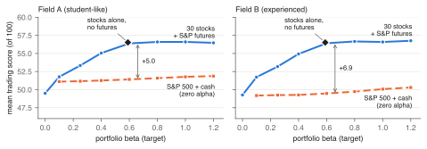

Summary. IQIC scores trading on the Sharpe ratio, alpha and Treynor ratio, all measured against the S&P 500 over 15 trading days. Alpha and Treynor are CAPM measures, and in US data the line relating beta to average return is flatter than the CAPM predicts, so low-beta stocks tend to show positive CAPM alpha. From 2 to 20 November I will hold the 30 least volatile S&P 1500 stocks that have already reported quarterly earnings, equally weighted, with at most six from any sector. Across 76 historical contest windows this beat an S&P 500-and-cash portfolio of the same beta by 5.1 to 7.1 points (out of 100), but scored about 7 points lower when its beta was set to zero. The stocks chosen on 30 October have a one-year beta of −0.01, lower than in any window I tested, so I am adding S&P 500 futures to bring the portfolio's beta to about 0.75.
Trading points come from percentile ranks against every other team over 15 trading days: 40 for the Sharpe ratio, 30 for alpha, 20 for the Treynor ratio and 10 for absolute return, with the S&P 500 as StockTrak's benchmark. Fifteen days is too short for a Sharpe ratio to say much. Its standard error with T returns is √((1 + SR²/2)/T) (Lo, 2002, eq. 9), about 4.1 in annual units for 15 daily returns, so a portfolio with a true annual Sharpe ratio of 1.0 would still show a negative one in roughly 40% of 15-day windows. So instead of targeting a rank, I looked for a high expected percentile across many possible windows and a small chance of a bottom-quarter finish.
Under the CAPM, expected excess return should rise one-for-one with beta. Tests going back to Black, Jensen and Scholes (1972) find a flatter line: in their 1931–65 sample the lowest-beta portfolio earned a CAPM alpha of +0.20% a month, and the fitted slope was 1.08% a month where the model predicted 1.42%. Frazzini and Pedersen (2014) find alphas falling steadily from the lowest to the highest beta decile of US stocks, and they note that mutual funds and individual investors tend to hold portfolios with betas above 1. Baker, Bradley and Wurgler (2011) offer one reason the pattern lasts. A manager who is judged against a benchmark and cannot borrow needs more than 2.5% a year of alpha before overweighting a stock with beta 0.75, if the market premium is 10%. Return beyond what beta predicts is exactly what the contest's alpha measures.
The ranking is relative, so the field matters. IQIC is in its first year and I could not find data on what students typically hold in trading contests, so I treat the field as an assumption and test two versions of it (Section 2.2). The evidence I have is indirect. Zweig (2015) describes how a team won a 4,400-team high-school contest ranked on return: “hold three to five stocks at a time — the smaller and the riskier the better — and borrow to buy them.” In an experiment, participants who were behind and could see their rank moved toward lottery-like assets (Dijk, Holmen & Kirchler, 2014). Professionals who were behind took more risk under rankings and tournament pay, though a ranking alone did not change how students behaved (Kirchler, Lindner & Weitzel, 2018). Stocks that Robinhood users bought heavily went on to earn abnormal returns of −4.7% over the next 20 days (Barber, Huang, Odean & Schwarz, 2022). My approach has a cost: when only a few contestants win, more variance raises the chance of winning (Gaba, Tsetlin & Winkler, 2004), and a low-volatility portfolio gives some of that up. I accept it because only half of the 200 points come from trading. A team can place without a top trading rank, but a bottom-quarter rank is hard to recover from.
| Element | Statement |
|---|---|
| Observation | Contest alpha and Treynor are CAPM measures against the S&P 500, and the empirical security market line is flatter than the CAPM predicts. |
| Rationale | Low-beta stocks tend to have positive CAPM alpha, and a diversified low-volatility portfolio has a steadier Sharpe ratio. |
| Universe | S&P 1500 constituents on 30 October 2026, share price above $1. |
| Signal | Standard deviation of the last 252 daily returns. A stock is eligible only if the company filed its quarterly results (SEC Form 8-K, Item 2.02) between 21 September and 29 October 2026. |
| Horizon | 2–20 November 2026 (15 trading days), no rebalancing. |
| Expected result | Realized portfolio beta between 0.56 and 0.99 with the futures; alpha percentile above the median; a lower chance of a bottom-quarter finish than an index or concentrated portfolio. |
| Falsification | The thesis is wrong if, across historical windows, the score gap against an index-and-cash portfolio of the same beta is zero or negative. A single 15-day window cannot confirm or reject it. |
My first version of the thesis was that the scoring rewards low beta. The trouble is that a low-volatility portfolio has both low beta and positive alpha, so its advantage in the simulation could have come from either. To separate the two, I ran a pre-registered test that kept the stocks fixed and, in the simulation only, added S&P 500 futures to move portfolio beta anywhere from 0 to 1.2. Each level was compared with an S&P 500-and-cash portfolio of the same beta, which has no alpha by construction. I expected the score to peak somewhere between beta 0.4 and 0.8.

RESULTS_beta.md).That prediction was wrong. The score climbs until beta reaches 0.6 and then stays flat up to 1.2 (every difference within ±0.25 points, |t| ≤ 0.24). The index-and-cash line hardly moves, because without alpha, mixing in cash changes neither the Sharpe ratio nor the Treynor ratio. The distance between the two lines is therefore the part of the score that comes from stock selection. On their own, the stocks scored 5.1 points above the same-beta index portfolio in Field A and 7.1 in Field B (t = 1.75 and 2.03), and their alpha percentile stayed at 0.55–0.56 at every beta, against 0.48–0.49 for the index. I rewrote the thesis around CAPM alpha as a result. The same test decided how I use futures. Cutting beta to 0 cost about 7 points, mostly through the Sharpe and Treynor percentiles, while pushing it above 0.6 added nothing. In the backtest the stocks already had a beta near 0.6 and needed no futures; the stocks chosen on 30 October have a beta near zero, so I buy futures to lift it.
The backtests use daily prices for the 1,011 current S&P 1500 members with a full price history from 2005 to 2024, from Yahoo Finance through the yfinance library. SPY stands in for the market and the 13-week Treasury bill yield (^IRX) for the risk-free rate. Earnings dates are the filing dates of 88,676 SEC 8-K filings under Item 2.02 (Results of Operations) for 980 companies, taken from the EDGAR submissions API. For past sectors I used SEC SIC codes in place of GICS. The live selection uses the current S&P 1500 list with GICS sectors, prices from yfinance, and the same EDGAR source for 8-K filings.
The simulator covers 76 windows of 15 trading days, each starting on the first trading day of February, May, August or November between 2006 and 2024. These months follow a quarterly reporting season, as November 2026 does. In each window my portfolio is ranked against 300 simulated teams on the four measures, weighted 40/30/20/10. I built two fields. In Field A (student-like), 35% of teams hold 5–10 of the 50 most traded stocks, 25% hold 5–10 stocks from the top tenth by 3-month return, 20% hold 10–20 random stocks, 10% hold mixes of SPY, QQQ and cash, and 10% hold 2–4 recent winners. Field B (experienced) has the same types in proportions 20/15/25/30%, plus 10% of teams holding 15–30 of the 60 least volatile stocks. A separate test on Field A over 228 monthly windows checked what happens if others copy the idea: the 30-stock low-volatility portfolio averaged 54.5 points with no low-volatility teams in the field and 53.1 when half the field held low-volatility stocks; in that case ten momentum stocks scored 47.5 and SPY 46.0.
| Component | Rule |
|---|---|
| Selection | Rank the eligible stocks by 252-day volatility, lowest first, and take the first 30, skipping any stock whose sector already has six. Prices as of the 30 October 2026 close. |
| Entry | Market orders on 2 November 2026 for $100,000 / 30 ≈ $3,333 per stock, rounded down to whole shares (fractional shares are not allowed). If one share costs more than that, take the next stock in the ranking. |
| Beta adjustment | β̂ is the average 252-day beta of the 30 stocks against SPY, computed as in the backtest. Buy Micro E-mini S&P 500 futures worth (0.6 − β̂) × $100,000, rounded up to whole contracts, since the score drops below beta 0.6 but is flat above it. Use the December 2026 contract, or March 2027 for any contract the 50% position limit blocks. If micro contracts cannot be traded, buy the same amount of SPY and IVV on margin, split evenly. Hold to the end. |
| Exits | Stock rule: if a stock closes 15% or more below its purchase price, sell it the next trading day. Portfolio rule: if the account closes 8% or more below $100,000, sell half of every position, futures included, the next trading day (once only). |
| Rebalancing | None. No new positions after 2 November, apart from replacing an order that cannot be filled that day. |
At the 30 October close the rules give the portfolio below. Each stock position is between $3,037 and $3,333, with $2,134 left in cash. β̂ came out at −0.01, well below the 0.38–0.79 range of past windows, so the rule calls for 2 contracts: $76,140 notional and an expected beta of 0.75 (or 50 shares each of SPY and IVV as the fallback).
| Sector | Stocks | Weight | Tickers |
|---|---|---|---|
| Utilities | 6 | 19.8% | FE, OGE, WEC, CMS, CNP, NI |
| Financials | 6 | 19.8% | CHCO, CBSH, FCF, CFR, WABC, CB |
| Real Estate | 6 | 19.7% | PECO, IVT, EGP, ADC, BRX, WPC |
| Consumer Staples | 4 | 12.9% | KO, COST, PG, PEP |
| Materials / Industrials | 3 / 3 | 9.6% / 9.5% | LIN, BCPC, ECL / SNA, RSG, NSC |
| Energy / Health Care | 1 / 1 | 3.3% / 3.3% | KMI / JNJ |
| S&P 500 futures | 2 | 76% (notional) | MESZ6 |
Data: prices from Yahoo Finance (yfinance), 8-K filings from SEC EDGAR, GICS sectors from Wikipedia’s S&P index lists; calculated by the author (out/live_e0_2026-10-30.csv, out/beta_overlay_2026-10-30.csv).
IQIC has not published its formulas. StockTrak's FAQ gives the usual Sharpe ratio, but its alpha is Rp − [rf + β(Rp − Rm)] and its Treynor ratio is σp/β, with no return term at all (StockTrak, n.d.). Both differ from the textbook versions (Jensen, 1968; Treynor, 1965). Taken literally, that Treynor ratio equals σm/ρ, where ρ is the portfolio's correlation with the market, so it simply rewards low correlation. Since I cannot tell which version IQIC uses, I scored every portfolio both ways (pre-registered):
| Mean score, Field A / Field B | Textbook formulas | StockTrak FAQ text |
|---|---|---|
| My design (30 low-volatility, earnings filter, sector cap, exits) | 56.5 / 56.5 | 54.2 / 55.9 |
| 30 lowest-volatility stocks, no filters | 57.0 / 57.3 | 55.6 / 57.5 |
| 10 lowest-volatility stocks | 55.1 / 54.8 | 55.9 / 57.4 |
| 10 momentum stocks (12-1 month return) | 51.6 / 50.4 | 54.0 / 54.8 |
| SPY | 51.8 / 50.1 | 41.9 / 41.5 |
| 20 highest-beta stocks | 45.3 / 43.2 | 47.7 / 49.1 |
Low-volatility portfolios come out ahead under both readings. Under the FAQ reading, though, index-like portfolios fall to the bottom on Treynor, and my chance of a bottom-quarter finish rises from 22% to 37% in Field A and from 25% to 34% in Field B. The design trails the unfiltered 30-stock portfolio by 0.5–1.6 points (|t| ≤ 1.1), which is what the earnings filter and sector cap cost. The cap costs more under the FAQ reading, because spreading stocks across sectors raises their correlation with the market. I kept it anyway rather than loosen a risk rule to suit one possible formula.
For each test I first wrote the portfolios, data, windows and decision rule into a dated file, and only then ran it. Eight tests were done this way (Section 4). The low-volatility core came earlier, from comparing 13 candidate portfolios in the simulator. That comparison was exploratory, so it carries selection bias.
| Scheduled | Unscheduled | |
|---|---|---|
| Market | US midterm elections 3 Nov; employment report 6 Nov; CPI 10 Nov; PPI 13 Nov (BLS schedule); no FOMC meeting. I am not taking a view on any of them. At a beta near 0.75 the portfolio picks up about three quarters of market moves. On macro announcement days the beta–return line slopes upward (+10.3 bp per unit of beta, against −1.5 bp on other days; Savor & Wilson, 2014, whose inflation release is PPI), so I expect alpha to be weakest on 6 and 13 November. | A sharp fall or rate shock: the portfolio rule moves half the account into cash at −8%. A sharp rally: the portfolio will lag the index, which is the price of holding low-beta stocks. |
| Single stock | Earnings releases are kept out by the filing filter. In the backtest, low-volatility stocks that had not yet reported were 3.2 percentage points more volatile inside the window (annualized realized volatility, t = 14) than those that had, even though their earlier volatility differed by only 0.2 points. Betas also rise on announcement days (Patton & Verardo, 2012). The filter gives up the earnings-announcement premium, about 9.9% a year for announcing firms (Savor & Wilson, 2016). | Mergers, guidance changes, accidents: with equal weights of 3.3%, no single loss is large, and the −15% stock rule and six-per-sector cap add to that. |
Without the sector cap, the 23 October preview held 12 financial and 9 real-estate stocks, 70% of the portfolio, mostly regional banks and REITs that share the same interest-rate risk. In the backtest the cap was binding in 97% of windows.
The three rules did little in the backtest. Together they changed the mean score by −0.13 points in Field A and −0.07 in Field B (t ≈ −0.1), and they did not reduce tail losses: the 5th-percentile window was −3.96% without them and −4.00% with them. The stock rule triggered for 0.12 stocks per window, and the portfolio rule fired once in 76 windows, in November 2008. I keep them as protection against concentrated scenarios rather than because they improved past results.
The futures add about $76,000 of S&P 500 exposure to a $100,000 account, so gross exposure is about 1.76 times the account, and a 10% fall in the index would cost about $7,600 on the futures alone. There are no short positions and no options sold. Selling index calls raised the simulated score, but I left it out for the reasons in Section 4.
Market orders fill at the bid or ask, and orders placed outside market hours fill at the next open. The rules need at most 94 of the 200 trades allowed. I check the rules after each close and log every order with the rule that triggered it.
Every row except the last was pre-registered with its decision rule; the last applies the beta test to the 30 October selection. Score differences are against the design as it stood at the time, in Field A / Field B.
| Hypothesis tested | Result | Decision |
|---|---|---|
| Opportunistic insider purchases (Cohen, Malloy & Pomorski, 2012), 2015–2026 | −0.20% per month vs. universe (t −1.04); 3 of 4 criteria failed | Rejected |
| Post-earnings drift among low-volatility stocks | −0.64 points in Field B; drift t = 1.35 | Rejected |
| Exclude stocks reporting inside the window | −0.24 / −0.48 points (t −0.2); stock volatility effect t = 14 | Kept as a risk rule |
| Add 1% out-of-the-money SPY calls | −13.0 / −16.2 points (t −6.0); calls raised beta by about 0.5 | Rejected |
| Hold SPY/QQQ only overnight (close to open) | −16.9 / −17.5 points (t −3.8 / −3.5) | Rejected |
| Sector cap, stock rule, portfolio rule | −0.13 / −0.07 points (t ≈ −0.1) | Adopted |
| Sell S&P futures to reduce beta to 0.25 / 0.40 | −3.2 / −3.3 and −1.5 / −1.6 points (t −2.1 to −2.9) | Rejected |
| Sell 2% out-of-the-money SPY calls | +3.1 / +4.6 points (t 2.2 / 2.6); passed the rule | Excluded (below) |
| Raise beta to 0.8–1.2 with futures | +0.1 / +0.2 points at most (|t| ≤ 0.24) | Rejected |
| Stocks at beta 0: raise it to 0.6 with futures (same test) | +6.9 / +7.2 points (t 3.7 / 3.6) | Adopted 31 Oct |
One test passed and I still excluded it. Selling out-of-the-money index calls met its pre-registered rule, but part of the gain comes from how performance is measured rather than from any information. Selling such options raises the Sharpe ratio and alpha without skill, because linear measures do not capture the large losses in sharp rallies (Goetzmann, Ingersoll, Spiegel & Welch, 2007), and the strategy that maximizes alpha relative to tracking error is a covered call (Guasoni, Huberman & Wang, 2011). In my test the calls lost 4.3–4.6 points on average when the S&P 500 rose more than 3%, and 19.8 points in the worst window. The strategy is meant to earn the alpha the contest is designed to measure, so I dropped it.
One prediction also failed: the score peak I expected at beta 0.4–0.8 never appeared (Section 1.5). The decision rule for that test only asked whether a higher beta beat the design, so a flat curve passed it. I should have written that rule more carefully.
Base rates from the 76 historical windows for the stocks with futures at beta 0.8, the tested level closest to my 0.75 (Field A / Field B), written before trading begins:
| S&P 500 return over the window | Windows | Mean score | P(bottom 25%) | My return vs. S&P 500 |
|---|---|---|---|---|
| Above +3% | 19 | 44.4 / 44.4 | 32% / 26% | +3.5% vs. +4.7% |
| Between −3% and +3% | 44 | 61.8 / 61.3 | 16% / 18% | +1.0% vs. +0.6% |
| Below −3% | 13 | 56.7 / 58.7 | 23% / 23% | −4.9% vs. −7.3% |
I expect realized beta to land between 0.56 and 0.99, the 10th–90th percentile of past windows at beta 0.8 (median 0.77). I revised this range on 31 October, when I added the futures, and it will fail if the stocks' own beta stays below zero (Section 6). If the S&P 500 rises more than 3%, I expect a below-median trading score; that is built into the design and would not by itself count against the thesis.
No single window can settle the thesis. With futures at beta 0.8, the design beat the same-beta index portfolio in 62% of past windows (by 5.0 points in Field A and 6.9 in Field B), and its alpha percentile was above the median in 64% and 58% of windows. The thesis is rejected if the average gap falls to zero or below as more windows, this one included, are added. After the contest I will report the results against the table above, recompute StockTrak's alpha and Treynor ratio from my daily returns to identify its formulas, and compare the leaderboard with the two simulated fields.
The backtest universe is today's S&P 1500, so it has survivorship bias. That lifts the stock portfolio's results but not the index's, which means the 5–7 point gap may be too large. I have not estimated by how much.
There is also evidence against the anomaly itself. With value weights and NYSE breakpoints, the low-volatility premium in raw returns is not significant, although the flat beta–return relation does replicate (Hou, Xue & Zhang, 2020). Much of the betting-against-beta return comes from very small stocks (Novy-Marx & Velikov, 2022), and US low-beta stocks have trailed the market by about 4.5% a year in raw return since 2017 (Acadian Asset Management, 2024). I found no academic study of low-volatility returns over just a few weeks.
This portfolio is outside the range I tested. In every past window the stocks' own beta was at least 0.38; on 30 October it was −0.01, and between −0.12 and −0.56 over the last 15 to 63 days. If those shorter-term betas hold, the portfolio's beta with futures would be only 0.2–0.64. The futures rule assumes the stocks still earn the alpha seen in the backtest, and no historical window tests that at a beta this low.
Both simulated fields are assumptions. Stocks that attract retail attention can keep rising for two weeks before reversing (Da, Engelberg & Gao, 2011), which would work against me over a 15-day window. The simulation is also simpler than the contest: it uses continuous percentiles where IQIC awards points in 13 bands, and it enters at the close before each window and sells at the next close after a rule triggers, while I will enter during the first session and sell at the next open. With 76 windows and noisy 15-day scores, every estimate here is imprecise.
Acadian Asset Management. (2024, February). Low-volatility investing: Welcoming the elephant into the room. https://www.acadian-asset.com/investment-insights/managing-risk/low-volatility-investing-welcoming-the-elephant-into-the-room
Baker, M., Bradley, B., & Wurgler, J. (2011). Benchmarks as limits to arbitrage: Understanding the low-volatility anomaly. Financial Analysts Journal, 67(1), 40–54. https://doi.org/10.2469/faj.v67.n1.4
Barber, B. M., Huang, X., Odean, T., & Schwarz, C. (2022). Attention-induced trading and returns: Evidence from Robinhood users. The Journal of Finance, 77(6), 3141–3190. https://doi.org/10.1111/jofi.13183
Black, F., Jensen, M. C., & Scholes, M. (1972). The capital asset pricing model: Some empirical tests. In M. C. Jensen (Ed.), Studies in the theory of capital markets (pp. 79–121). Praeger.
Cohen, L., Malloy, C., & Pomorski, L. (2012). Decoding inside information. The Journal of Finance, 67(3), 1009–1043. https://doi.org/10.1111/j.1540-6261.2012.01740.x
Da, Z., Engelberg, J., & Gao, P. (2011). In search of attention. The Journal of Finance, 66(5), 1461–1499. https://doi.org/10.1111/j.1540-6261.2011.01679.x
Dijk, O., Holmen, M., & Kirchler, M. (2014). Rank matters – The impact of social competition on portfolio choice. European Economic Review, 66, 97–110. https://doi.org/10.1016/j.euroecorev.2013.11.010
Frazzini, A., & Pedersen, L. H. (2014). Betting against beta. Journal of Financial Economics, 111(1), 1–25. https://doi.org/10.1016/j.jfineco.2013.10.005
Gaba, A., Tsetlin, I., & Winkler, R. L. (2004). Modifying variability and correlations in winner-take-all contests. Operations Research, 52(3), 384–395. https://doi.org/10.1287/opre.1030.0098
Goetzmann, W., Ingersoll, J., Spiegel, M., & Welch, I. (2007). Portfolio performance manipulation and manipulation-proof performance measures. The Review of Financial Studies, 20(5), 1503–1546. https://doi.org/10.1093/rfs/hhm025
Guasoni, P., Huberman, G., & Wang, Z. (2011). Performance maximization of actively managed funds. Journal of Financial Economics, 101(3), 574–595. https://doi.org/10.1016/j.jfineco.2011.03.015
Hou, K., Xue, C., & Zhang, L. (2020). Replicating anomalies. The Review of Financial Studies, 33(5), 2019–2133. https://doi.org/10.1093/rfs/hhy131
Jensen, M. C. (1968). The performance of mutual funds in the period 1945–1964. The Journal of Finance, 23(2), 389–416. https://doi.org/10.1111/j.1540-6261.1968.tb00815.x
Kirchler, M., Lindner, F., & Weitzel, U. (2018). Rankings and risk-taking in the finance industry. The Journal of Finance, 73(5), 2271–2302. https://doi.org/10.1111/jofi.12701
Lo, A. W. (2002). The statistics of Sharpe ratios. Financial Analysts Journal, 58(4), 36–52. https://doi.org/10.2469/faj.v58.n4.2453
Novy-Marx, R., & Velikov, M. (2022). Betting against betting against beta. Journal of Financial Economics, 143(1), 80–106. https://doi.org/10.1016/j.jfineco.2021.05.023
Patton, A. J., & Verardo, M. (2012). Does beta move with news? Firm-specific information flows and learning about profitability. The Review of Financial Studies, 25(9), 2789–2839. https://doi.org/10.1093/rfs/hhs073
Savor, P., & Wilson, M. (2014). Asset pricing: A tale of two days. Journal of Financial Economics, 113(2), 171–201. https://doi.org/10.1016/j.jfineco.2014.04.005
Savor, P., & Wilson, M. (2016). Earnings announcements and systematic risk. The Journal of Finance, 71(1), 83–138. https://doi.org/10.1111/jofi.12361
StockTrak. (n.d.). Professor StockTrak support FAQ (sections on Sharpe ratio, Treynor ratio and alpha). Retrieved 28 October 2026, from https://www.stocktrak.com/professor-stocktrak-support-faq/
Treynor, J. L. (1965). How to rate management of investment funds. Harvard Business Review, 43(1), 63–75.
Zweig, J. (2015, May 11). Stock market 101: Teaching the wrong lessons? The Wall Street Journal. Reposted at https://jasonzweig.com/?p=3618
Daily prices: Yahoo Finance via the yfinance Python library (S&P 1500 constituents, SPY, QQQ, ^IRX), 2005–2024 and live. Earnings filing dates and SIC codes: SEC EDGAR submissions API (data.sec.gov). Insider transactions: SEC Insider Transactions Data Sets, 2009–2026. SPY options: optionsDX end-of-day chains, 2010–2023. Economic release dates: U.S. Bureau of Labor Statistics release calendar, November 2026. Contest rules: iqic-official.org (/details, /structure) and the StockTrak session rules for “IQIC 2026”.